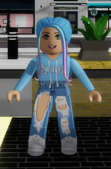
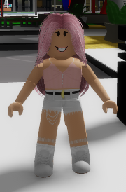

Me and my best friend Sky
This is Tanisha and these are the stories I made
Sky
Me
How we became friends
Sky is my best friend and we spend time together, we love ice-cream and our favourite game in Roblox is brokeheaven RP. We sleep together in alternate days and help each other do our homework. Now let me tell me a story of how we started hanging out often. We had a group called the
‘squad’ and one day they thought of breaking our friendship so they told me that “you should leave sky alone for some time or we will not let you play in this group”
soon I stopped talking to her and went home, she came behind me and asked “why are you not going home with me” I said “I don’t want to talk about it now”, so she went home crying. I complained my mom about the situation and started
crying my mom told me to call her and say sorry. Soon I called her and said sorry she said sorry I an angry way I was so sad that I behaved like that to her. After a while she came to my house and offer me for having ice-cream with her. I smiled and accepted it because
I knew that we are friends again and never break our friend ship ever again so this is how we started hanging out
Robot Invasion
It started when the evil doctor had made an evil robot so that he could take over the world, he also made a zombie potion so that if the robot will fail the zombies could help him. The Robot was huge and it had weapon’s it was black in colour and had a scary face. Now I will tell you how he made the zombies first he made some more robots and gave them some zombie portion. Soon he bought the big robot alive to test him out. The robot was so evil that he locked his creator ‘the evil doctor’ in his room. The big robot went out to rule the world himself so he started attacking people but he was slow so the people could escape, and me and my friend didn’t know about the robot so as usual me and my friend Sky went to take ice-cream me and sky have been best friend for ever she had blond hair and she liked the colour blue. She wore a blue bow in the side. Whilst we were going to the ice-cream shop we saw the robot and screamed and went to the secret bunker in the cleaners. Meanwhile as the robot was smart, he wanted a secret weapons area, so he took the spot where the evil doctor had kept all his potions. It was above the hospital and no one knew except the robot. Now me and sky knew that we had to do something, so we went to my house to search how to get super powers and the only website which could tell is, the dark web. We searched and finally found how to get super powers. We had to go to our school and go under the stage and had to press one button. After when we pressed the button we got our super powers we could run fast and be invisible. Meanwhile the evil doctor wanted to go out of the room and destroy the robot, because he knew that it will go out of control. So, he made the zombie alive to help him go out of the room. The zombies would listen to the doctor unlike the robot. So now he searched in the dark web that how to get supper power he followed the same steps as we did. While we were going outside the stage we heard some foot steps coming towards us we got sceared. The evil doctor went in the stage and saw us he screamed ahhhhhh who are you what are you doing here we replied”we should be asking who are you” the evil doctor said “I am here to get the supper powers and im the one who created the robot what about you” I said “ ohh! Even we came to get some supper power lets teem up and destroy the robot ” he agreed to us and told his plan so we had to distract the robot and the doctor will go inside his lab and look for something. Soon we went out of the school and went according to plan. We went towards the robot so that if he attacks someone we will be able to distract him and make it follow us. Mean while the doctor went inside the lab to see something that might help in the situation but then as soon as he enterd the lab he saw many wepons and then he rememberd that he had to take over the world. So he took out the 3 guns and went outside near the robot to make it look like he is in the side of me and sky we really believed him that he would help us. Soon he gave a chit and a pen to the robot jumping high and acting out to save us from the robot. The chit said that I will help let you rule the world if you stop harming them for no reason write it down if it is a yes. The robot agreed and wrote yes and gave it to the doctor we questioned him “what was that” he replied “ You think I will ever be kind now I will rule over the world finnaly its my time to shine” we said “not yet”. As we were fast we went inside of the doctors lab and got some wepons which could destroy, shields and golden armour to save our self by the doctors weapon’s. soon as we went out a bullet came towards us, sky kept her hand in front of me and saved me with the help of her armour and she said, “It’s time to be wonder women ,I will hold the shield so that you can use it as a ricochet and take the Maxim machine gun so that you can easily destroy the robot”.
I jumped high and gave a shot with my machine gun to destroyed the robot.I gave the honour to sky to im-prison the doctor for life long
Another attack
I opened my eyes with sky’s voice she shook me up with all the strength because we had planned to go out shopping the whole day for camping. We bought new sleeping bag’s a new speaker for listning songs. We got a packet of marshmallow and some snacks. Sky was sceared so she took her stuff toy.We knew that we were gonna be fine because we were go-ing to be together all time. Soon it was night time and we had to go for our camp my mom said here is a gun for both of you if you face any trouble. We reached and got our tent ready we ate our marshmallow and snacks and listened to songs, until when sky spot 1 zombie. she said” ok bestie just don’t look behind there is a green guy staring at us and you know what that means” I exclaimed “ohh no!! It might be from the doctors invasion he created the zombies too and I heard that it can infect us. Quick get the gun we can kill him no it whatever”. we grabbed our guns and made a shot it missed but kept him distracted for few seconds we ran out near the city were it was safe but some people were already infected. I said “we have to look after our parents and we need some help to cap-ture the zombies well the can help us ” we ran to our house, but luckily our parents were at the same place. We locked the door and told them our situation they excepted and took their wepons that we had got from the previous invation I wore my old armour to protect but we needed more protection I was the only person who had an armour so I told them to wait here. I went to the area wher the guns and everything we got last time. I got enough armour and some helmet to protect us from the zombies attck. When I went out-side I saw that not much people were infected but we had to finish it quick. I saw a zombie which was near the door trieng to break in. I took my gun and gave him a shot. I said “ lets go!!!” .I went inside and and told them to go at the center ASAP so get ready to fight. we all wore a helmet and went down the slop. I said that “ sky and I will go to near the icecream store because we want to save our ice cream and you all will clear the road ” we went in and saw that many zombies were eating our favourite ice cream so sky said “ why are they eating our favourite ice cream fla-vour ” I said “ sky that’s no important” we got our guns ready and started shooting son after we finished clearing the icecream store we ran into different stores and finished it. The only place left was the camping area where many zombies were there. we called our parent to help us get them all we went near the camp crouching down. Skystarted shooting and got a lot of shot.I tried to help sky but all the zombies gathered her.meanwhile our parents were tryng to finish of the open space where the zombies were left. she fell down a hole and found out that there was a zombie base. sky got her hand up to let us know to follow her. we all captured the zombies which was trying to get inside the small hole. We finished every-thing and went down to the hole sky was targeting the zombies but there were a lot and she needed our help so we all were at a side trieng to kill but in the last there were 2 mega zombie which was sitting in their throne. I said “mom and skys mom take over the right side throne and we will capture the left side throne”. We got our powerfull guns which could de-stroy it. We made a shot together at the same time and destroyed it. We got surprised “ what that was so easy ” we got out of the hole and did a celebration of our victory. We saw many people living there normal life with peace.
My father saves the day
I opened my eyes with a nice stretch and when I went to see the date today, I noticed it was my father’s birthday. I went down to eat breakfast and wished dad. I didn’t really have time to make anything but my mom and I were planning to make a cake for him and thinking to keep a party with sky’s family at our house. We wanted him to get a bit distracted so I told dad to get some food to eat as we had nothing to eat for snacks. Meanwhile when my dad went to the grocery store, he got all the things written in the list but in the last he wanted a drink. The soda which he got was named a special drink for father’s so he got that drink as it was the only one left. He purchased everything and drank that; he felt a bit dizzy but afterwards he was fine. When he got home, we were ready with our cake and decorations, we left the door open so that we could surprise dad with Skys mom and my best friend. we were so excited, so when he came in, we all ducked down the couch and then as soon as he walked forward sky switched on the light and we said boo!!!!!!
But when we tried to scare him didn’t get scared at all and we were shocked because whenever I did boo to him unconsciously, he used to always get scared. Then my mom changed the topic and got out the cake it was a nice simple cake with a superman logo he was so happy to see the cake. But after some time, his eyes changed to blue in color and we were like “wow!!!”. We didn’t know what was going on but we asked our dad “did you eat something or is it just us seeing this”. My dad replied that I drank a soda called the ‘special drinks for fathers’. My mom recommended that we should take him to the doctor to see what was going on. We went to the doctor and the doctor said “he might have a super power but we don’t know what he can do” I and sky were so shocked that we started shouting. After some time, my dad started to fly (not that shocking because we know he is the super hero). Now what was left is his suit we went to the costume store to get one. all that was left was its logo so Sky and I took a cardboard and cut it into a Dimond shape and wrote a S and he loved it. My dad is mostly hanging out with doctors because they want to train him. One day a scientist came to meet my dad and said that he would help my dad to use his power. My dad asked him “did you create this drink” the scientist said “Yes and I wanted to see if it would work. It took some time understanding how those power work but now I have got it” My dad agreed and went to a ground to practice flying. Soon he was full set and almost like a super hero.
Today in the news it showed that there is scientific human destroying Brookheaven which had almost the same characteristics as my father so my father asked the scientist did you make another juice he replied “no”. My father was shocked. After sometime with other news we saw that the one destroying Brookhaven was the evil doctor which we captured him earlier. Sky and I said at the same time “How did he escape” But then the scientist said the doctor was his brother who always hated him. The scientist said after a thought “let’s get him back to where he belongs, he has got brains like me but not quality so let’s get going”. We all together made a plan for our attack and sky and I were a backup for dad. The scientist made some weapons so that we could use when my father is in trouble. The scientist and my dad did some training and we were all set to destroy the evil doctor once again. My dad went towards the evil doctor who almost destroy all the cars in the town. When the evil doctor saw my dad, he said in a shock “who are you and why do you have the same power as I have” my dad replied “your brother created a soda which gave me power” the evil doctor said “oh is it lets see what you got”. My dad straight away gave him a supper sonic punch but nothing happened to him that’s when we thought that the doctor was way more powerful than my dad. The evil doctor then gave his sonic punch and my dad was injured worse. I knew that I had to show up now as my dad could not do anything but to fly so we ran to an open space near where the doctor was so I ran as fast as I could and jumped on the shield that sky was holding, my dad gave me a slight push to punch but not only me even him so that we could destroy him. He fell down and couldn’t stand up. Now we sent him to another high security place where he will never be able to escape. After all sky and I end up flying with my dad. I don’t care if he has super